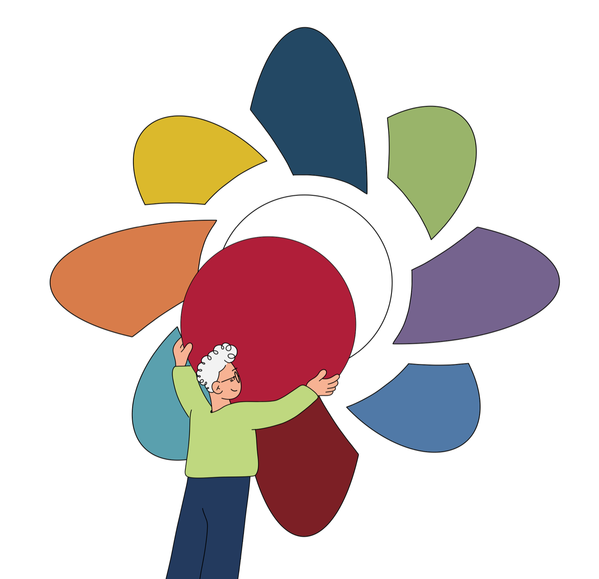

well for life
designed and co-illustrated a guide to better well-being
Stanford WELL for Life is a study at the Stanford Prevention Research Center (SPRC) that shifts the lens of chronic disease prevention toward understanding and enhancing well-being. What does it mean to be well, and what can we do to increase one’s well-being?
The goal of the study is to understand and measure well-being across countries and cultures. To date it has recruited over 31,000 participants from five study sites: 6,780 from the US (mostly the Bay Area), 10,290 from Hangzhou, China, 3,033 from New Taipei City, Taiwan, 9,300 from Singapore, and 2,184 from Bangkok, Thailand.
In 2024, the WELL team created a guide summarizing the current state of research on well-being, its domains, and its key determinants. The guide offers insights from our group and other well-being researchers, along with practical ways to maintain and improve your own well-being.
I served as the primary graphic designer on this project, leading the layout design and co-illustrating alongside the talented Jan Buchczik.

read the guide
click the bottom right corner to view in fullscreen.